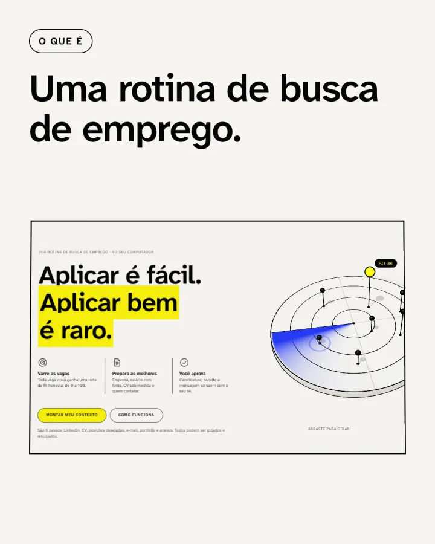
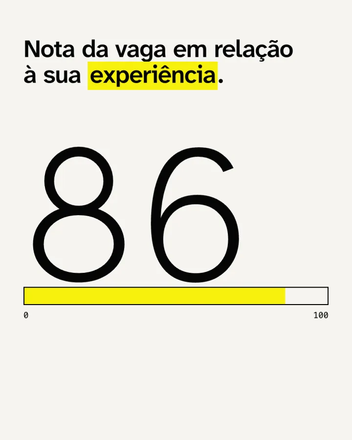
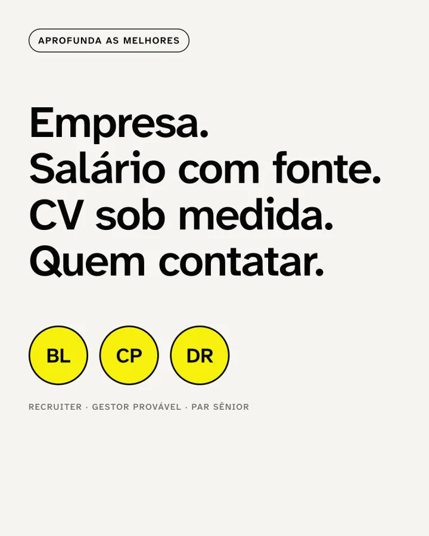
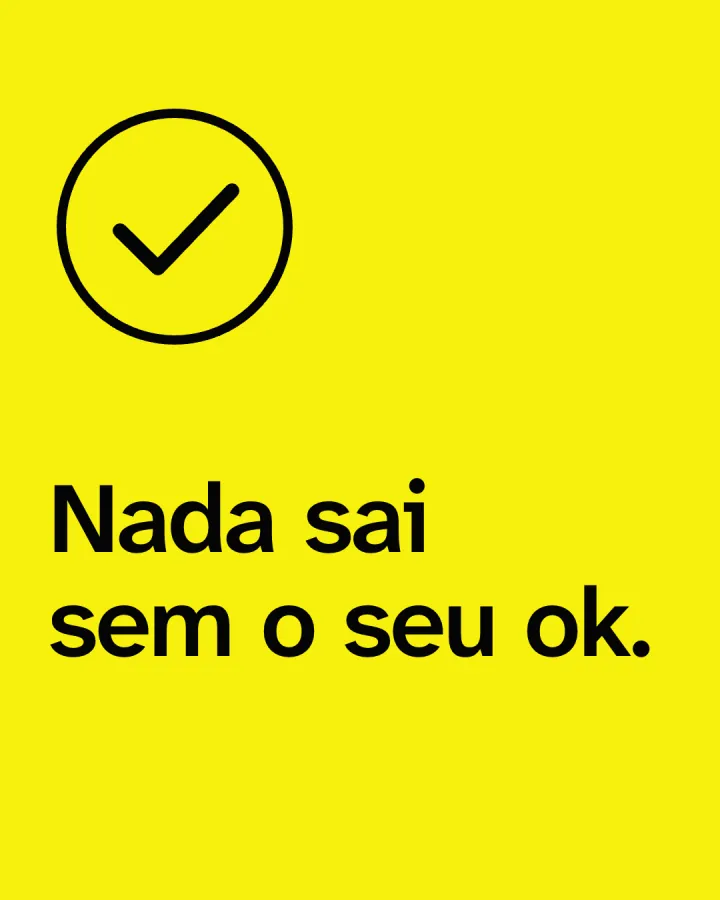

Radar de Vagas
Applying is easy. Applying well is rare.
Looking for my next role, I noticed that almost all of my time went into searching. Very little was left for deciding well. So I built a routine that does the heavy lifting of a job search, and stops for me at every decision.
It runs on your own computer, with the LLM you prefer (Claude Code, Codex, Kimi). Every day it scans new openings, scores each one against your real experience, digs into the best ones and puts everything on a local dashboard, where you decide with one click.
- Scan. New openings on LinkedIn, and on Gupy and Sólides for searches in Brazil.
- Score. A fit score from 0 to 100 against your experience, with the reason in one line.
- Go deep. For the best ones: the company, salary with sources, strengths and honest gaps, a one page CV made for that role and who is worth contacting.
- Decide. A local dashboard to approve, adjust or drop each one. Applications are filled in the browser and wait for your final ok.
- Nothing goes out without your ok. No application, invite or message is sent on its own.
- Your data stays on your computer, not on a platform.
- Nothing is invented. Every line comes from facts you confirmed.
All of it: the routine and its rules, the fit criteria, the local dashboard and its visual system, the CV template and the 3D radar on the welcome screen.
Claude Code skills · Python · local dashboard · Three.js · MIT license
git clone https://github.com/marcoscarvalho-84/radar-de-vagas.git
cd radar-de-vagas
bin/radar demo


